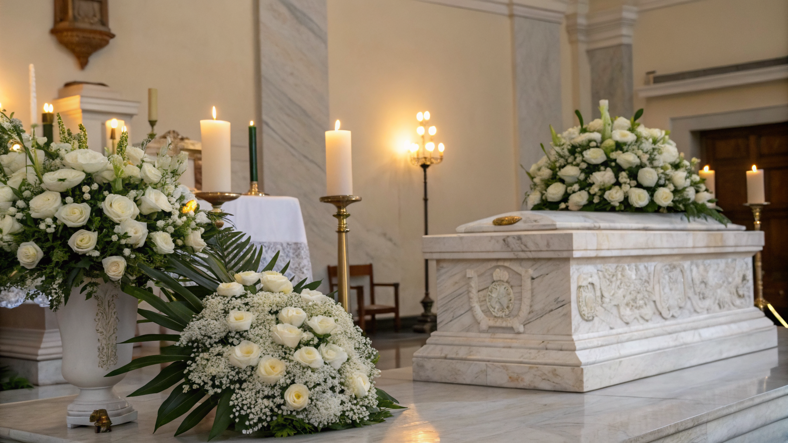

Automazione digitale per onoranze funebri: come Eternia colma il divario competitivo

Automazione digitale nelle Onoranze Funebri: Umberto Terracciano di Croce Verde RE come caso emblematico
- L’attuale dipendenza da metodi manuali nelle onoranze funebri comporta inefficienze e rischi operativi significativi.
- I ricordini e necrologi cartacei, costosi e vulnerabili, limitano la capacità di offrire un servizio commemorativo solenne e duraturo.
- Eternia offre una soluzione digitale integrata con portali memoriali personalizzati, necrologi AI e strumenti interattivi per modernizzare il settore funebre, aumentando la competitività.
Analisi approfondita della notizia e delle implicazioni operative
La figura di Umberto Terracciano di Croce Verde RE rappresenta un punto di riferimento nel settore delle onoranze funebri, sottolineando una realtà spesso trascurata: la forte presenza di processi manuali e cartacei nella gestione degli aspetti commemorativi. Nonostante l’importanza emotiva e simbolica di ogni cerimonia funebre, molte agenzie continuano a utilizzare ricordini cartacei e necrologi tradizionali che, oltre a essere costosi, rischiano di perdersi o risultare poco fruibili nel tempo. Questo approccio non solo penalizza la qualità del servizio ma crea un divario competitivo crescente rispetto alle realtà che adottano l’automazione digitale.
In un mercato dove la sensibilità e l’attenzione ai dettagli hanno un ruolo chiave, la capacità di innovare diventa cruciale. La crescente digitalizzazione offre nuove opportunità per migliorare la gestione delle cerimonie e il rapporto con i familiari, rendendo l’esperienza commemorativa più solenne, accessibile e moderna.
Le conseguenze e i costi di non agire
La permanenza di sistemi tradizionali basati su documenti cartacei comporta molteplici criticità operative e commerciali. Innanzitutto, i ricordini cartacei sono soggetti a smarrimenti, usura e difficoltà di conservazione, compromettendo il ricordo duraturo del defunto e l’affidabilità del servizio offerto. Inoltre, i necrologi stampati sono spesso costosi, limitati da spazi fisici e distribuzione poco capillare, rendendo complessa la raccolta delle condoglianze da parte degli amici e conoscenti.
Dal punto di vista economico, i costi incrementali di stampa, distribuzione e archiviazione cartacea incidono negativamente sulla marginalità delle agenzie. La mancanza di strumenti digitali inoltre diminuisce la visibilità e l’efficacia comunicativa, esponendo le realtà meno tecnologiche al rischio di perdita di quote di mercato a vantaggio di competitor più innovativi. Infine, la difficoltà di raccogliere condoglianze in maniera solenne e interattiva riduce l’esperienza emotiva e di condivisione prevista, impoverendo significativamente il valore aggiunto percepito dai clienti.
Come Eternia risolve il problema
Eternia, il SaaS sviluppato da RM Studio specificamente per titolari di onoranze funebri, case funerarie e servizi memoriali pet, rappresenta una risposta concreta ed efficace all’esigenza di modernizzare il settore. La piattaforma integra portali memoriali digitali d’autore che, tramite QR Code applicati su urne e ricordini, permettono un accesso immediato e duraturo alla memoria del defunto.
Tra le funzionalità più distintive troviamo una mappa GPS per indicare il luogo della cerimonia o della sepoltura, un Libro dei Ricordi interattivo che consente a familiari e conoscenti di lasciare messaggi, foto e condoglianze, e necrologi generati in 1-click grazie all’intelligenza artificiale che garantisce qualità e solennità comunicativa. Inoltre, Eternia include una reperibilità vocale AI H24, rendendo così possibile un supporto costante e automatizzato.
Questi strumenti digitali non solo rendono la gestione più efficiente e sicura, ma potenziano anche l’esperienza commemorativa, offrendo un servizio esclusivo e white-label personalizzato che rafforza l’immagine professionale e la fidelizzazione della clientela.
| Aspetto | Gestione Tradizionale | Con Eternia |
|---|---|---|
| Tipo di Documenti | Ricordini e necrologi cartacei | Portali memoriali digitali con QR Code |
| Accessibilità | Limitata e fisica | Online 24/7, accesso remoto immediato |
| Costo | Alto per stampa e distribuzione | Prezzo fisso per pacchetto digitale |
| Interazione col pubblico | Condoglianze limitate e non interattive | Libro dei Ricordi interattivo e aggiornato in tempo reale |
| Supporto | Orari limitati e non automatizzato | Reperibilità vocale AI h24, assistenza intelligente |
💡 Ti è stato utile questo approfondimento?
Condividilo con un collega o un amico del settore Titolari di Onoranze Funebri, Case Funerarie e Servizi Memoriali Pet a cui potrebbe interessare!
FAQ - Domande frequenti per i professionisti del settore
1. Eternia richiede competenze tecniche particolari per essere utilizzato?
Assolutamente no. La piattaforma è stata progettata per essere intuitiva e user-friendly, con un’interfaccia semplice e un onboarding dedicato per i titolari e i loro operatori.
2. È possibile personalizzare i portali memoriali con il brand dell’agenzia?
Sì, grazie a un modello white-label, ogni agenzia può personalizzare i portali con il proprio logo, colori e stile, mantenendo così una forte identità di marca.
3. Come garantisce Eternia la privacy e la sicurezza dei dati?
Eternia adotta standard avanzati di crittografia, conformità alle normative GDPR e server protetti per assicurare che tutte le informazioni sensibili siano gestite in modo sicuro e riservato.
Inizia Subito
Agency Hub B2B a €690 per 10 Cerimonie White-Label personalizzate col brand dell'agenzia.
Fonti Ufficiali e Risorse Esterne
Scopri l'Intelligenza Artificiale per la tua attività
Ottimizza i processi e aumenta le vendite con le soluzioni B2B di RM Studio.
Scopri Eternia